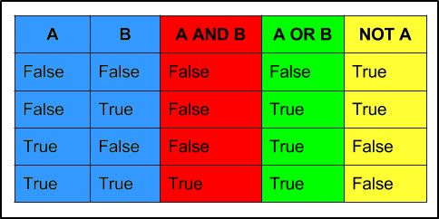

Relational and Boolean Operators in Python
Theory Table:


Boolean Operators:
boolean_1 and boolean_2 # The “and” operator return “True” if BOTH the boolean are TRUE, else FALSE
boolean_1 or boolean_2 # The “or” operator return “True” if AT LEAST one of them is TRUE, else FALSE
not boolean_1 # The “not” operator return the OPPOSITE value of the boolean